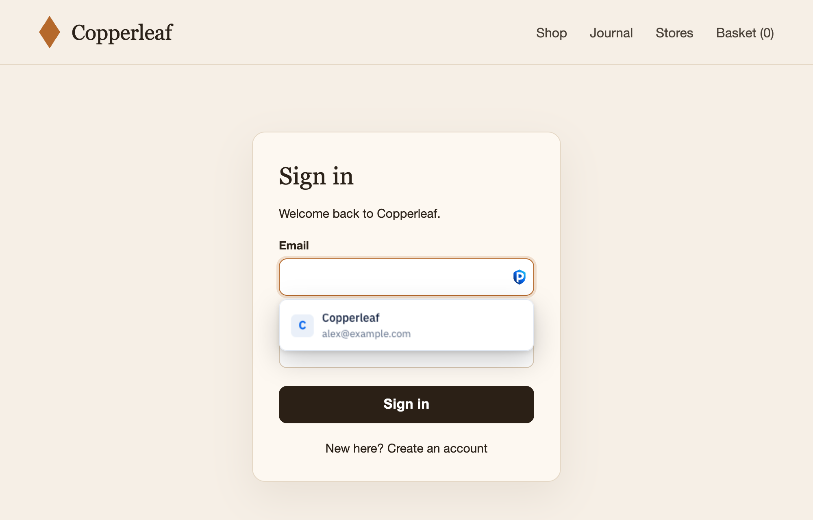
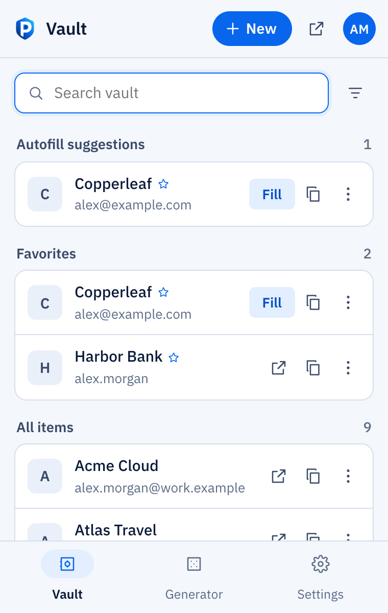
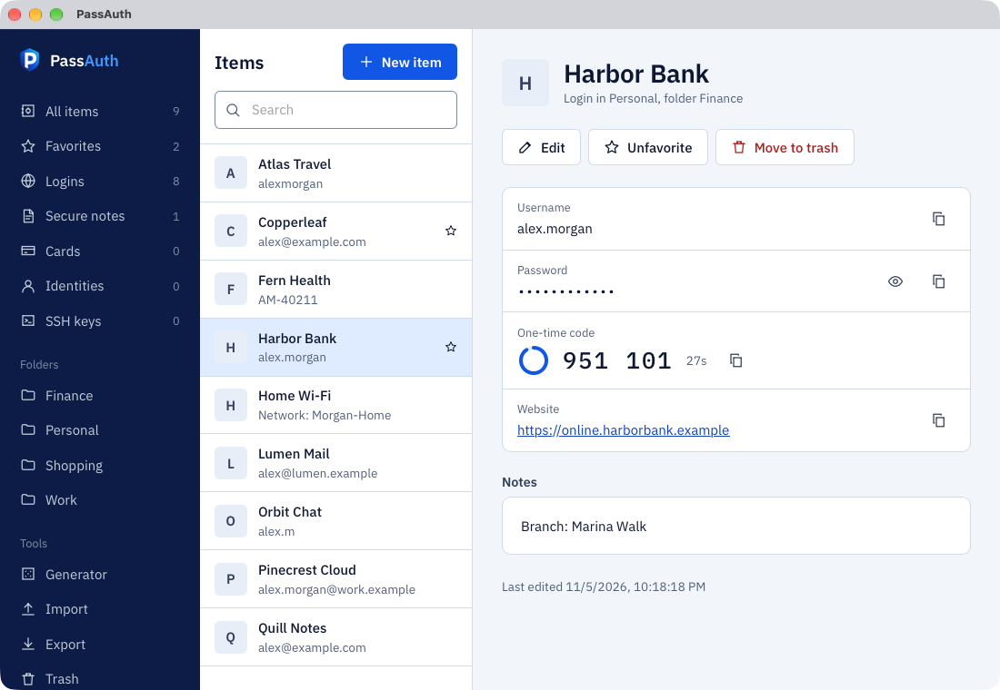
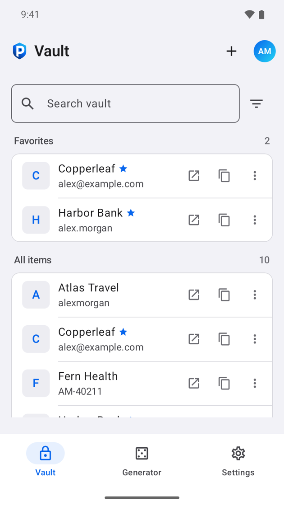
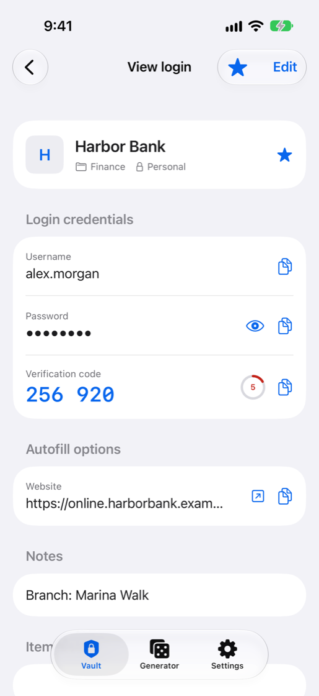

Your passwords, on your own server.
PassAuth encrypts your logins, verification codes and passkeys on your devices, then syncs them through a server you run. The server stores your vault encrypted and can't read it.
Free and open source under the MIT License.
- Username
- alex.morgan
- Password
- Hidden
- Verification code
- 256 920
Encrypted on your device
Everything you expect from a password manager
Fill logins in your browser and apps, keep verification codes next to your passwords, and sign in with passkeys.

Fill in one click
Pick a login from the menu under the field, from the toolbar or with a shortcut. Logins only fill on the site they were saved for. On a Mac, the desktop app's AutoFill extension fills Safari and apps too.
Verification codes
Codes count down next to the password and are copied after you fill, ready to paste.
Passkeys
Create and use passkeys on sites that support them. They sync to all your devices with your passwords.
Save as you sign in
PassAuth offers to save new logins and update changed passwords when you submit a form.
Share with your people
Share vaults with family or a team. Each vault key is sealed to each member, and you can compare key fingerprints to confirm who you share with.
Bring your passwords
Import the export file from your current password manager. It's read and encrypted in your browser.
Two-step login
Protect your account with an authenticator app, an email code, a security key or a passkey. Recovery codes get you back in if you lose the device.
Works offline
The extension and the apps keep an encrypted copy of your vault on the device, so you can unlock it and fill logins when your server is out of reach.
Export anytime
Take your vault with you as a file whenever you like, and print an Emergency Kit with everything you need to get back in.
What your server can and can't see
Everything you save is encrypted before it leaves your device, with keys made from your master password. Whoever runs the server gets as little as possible.
Visible to the server
- Your email address, and your name if you add one
- How many items you have, their types, and when they change
- Which vaults you share, and with whom
- Your IP address when a device connects
- Websites whose icons you ask it to fetch (you can turn icons off)
- Sign-in
- OPAQUE proves you know your master password without sending it, so the server never sees it. Guessing it from stolen server data is slowed by Argon2id, and blocked if you use a Secret Key.
- Keys
- Argon2id, optionally mixed with a 128-bit Secret Key that never leaves your devices.
- Encryption
- Every item has its own key and is sealed with XChaCha20-Poly1305, bound to its vault so it can't be swapped.
- Two-step login
- A second step at sign-in: an authenticator app, an email code, a security key or a passkey in the web vault. Recovery codes cover a lost device.
Run your own server
PassAuth is one small container with the web vault built in. It stores data in SQLite, or PostgreSQL if you prefer, and runs as your own user.
- Get the files on a machine with Docker.
- Set your user and admin password in
.env. - Start PassAuth with Docker Compose.
- Put it behind HTTPS, which the apps require, then create your account.
# 1. get the files
git clone https://github.com/Fahed-Alhammadi/PassAuth.git
cd PassAuth
# 2. set PUID/PGID and the admin password
cp .env.example .env
nano .env
# 3. start (email and sign-ups: your-domain/admin)
docker compose up -dOn your computer and your phone
Every server includes a web vault. Sign in there, in the extension, on your desktop or in the apps with your server's address, your email and your master password, and your vault stays in sync.

Browser extension
For Chrome, Edge, Brave and other Chromium browsers. Get it on the Chrome Web Store

Desktop
macOS, Windows and Linux. Lives in your menu bar or system tray, syncs in the background and updates itself. On a Mac it fills passwords, passkeys and codes in Safari and apps through AutoFill.
Linux packages for Debian and Fedora are on the releases page.

Android
Autofill in apps and browsers, and a passkey provider. Not in Google Play yet. To join the beta, join the tester group with your phone's Google account, then join the test on Google Play.

iPhone and iPad
AutoFill for passwords, codes and passkeys. Saves new logins and suggests strong passwords as you sign up. Not in the App Store yet. Join the beta on TestFlight